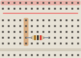
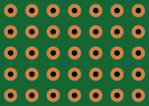
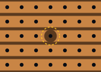
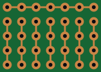
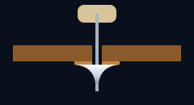

The short answer
- Still experimenting? Use a breadboard. Nothing is soldered, so swapping a part takes a second.
- Building something to keep? Use perfboard. It's a blank page: any circuit, as compact as you can make it.
- One chip and a handful of parts? Stripboard does half the wiring for you.
- Want an exact copy of your breadboard? A breadboard-style protoboard has the same pattern, so parts move across one for one.
- Making five or more, or a board full of surface-mount chips? That's when to order a real PCB.
Four boards at a glance
All four have holes on the same 2.54 mm (0.1 inch) grid, so the same parts fit all of them. What changes is how much is already connected for you.




Breadboard: the sketchpad
A solderless breadboard is a plastic block full of spring clips. Push a lead into a hole and a clip grips it, along with the other holes in its row (usually five). Long rails down the sides carry power and ground. Nothing is soldered, so trying a different resistor takes seconds.
That's also why it's no home for a finished circuit. Leads work loose, jumper wires snag, the clips wear out, and the long metal strips add stray capacitance that can upset fast or sensitive circuits. Use a breadboard to prove a circuit, then move it to something soldered.
Fun fact: the name is literal. Early radio builders mounted their parts on wooden boards, sometimes the kitchen's bread board, with nails or thumbtacks for terminals. The plastic version kept the name.
Perfboard: a blank page
Perfboard (short for perforated board) is also sold as protoboard, prototype PCB, dot board or, in some places, zero PCB. It's a sheet with a grid of holes, each with its own copper pad, and no two holes connected. You make every connection yourself: by bending a component's lead over to its neighbor, bridging pads with solder, or running wire.
That freedom is the point. Any circuit fits, parts sit exactly where they make sense, and a careful layout can be remarkably compact. The price is wiring time, and a messy layout gets messy fast. That's why it pays to plan it first.
Stripboard: wires included
Stripboard has the same holes, but its copper runs in long parallel strips, so every hole along a strip is already connected. You build by placing parts across the strips and cutting a strip wherever a connection has to stop. The best-known brand is Veroboard, made by the British company Vero since the early 1960s, which is why many people still call any stripboard "Vero".
For circuits that flow in a line, like audio effects, small power supplies or a chip with a few parts around it, stripboard is fast: there's little wiring, mostly a few short links. It's less happy with dense digital circuits, where you end up cutting more copper than you keep. More in Stripboard layout.
Breadboard-style protoboard: the easy copy
These are solderable boards printed with a breadboard's pattern: rows of pads joined in groups, with power rails along the edges (Adafruit's Perma-Proto is a well-known example). If your circuit works on a breadboard, you can move it across part by part into the same holes, with no layout work at all.
The trade-off is that they cost more, and they're no more compact than the breadboard you started from. You'll also meet in-between patterns, such as boards with pads joined in twos or threes, which sit somewhere between perfboard and stripboard.
What the board is made of
The cheapest boards are FR-2: paper soaked in phenolic resin, usually brown, with copper on one side only. They work, but their thin pads lift off easily if you overheat them or rework a joint, and they give off a distinctive smell when hot.
Better boards are FR-4, woven glass fiber in epoxy, the same material as most real circuit boards. They're stronger, cope far better with heat and rework, and are usually double-sided with plated-through holes: copper lines each hole and joins the pads on both faces, so solder flows right through and grips the lead along its whole length.

Beginner's tip: a little extra for double-sided FR-4 board buys you forgiveness. You will rework joints while you learn, and plated holes survive it.
Hole spacing and board size
Almost every board uses a 2.54 mm (0.1 inch) pitch: the spacing of DIP chips, pin headers and breadboards, so through-hole parts drop straight in. Boards are sold by their size in centimeters, and the number of holes follows from that: a common 5 × 7 cm board has 18 × 24 holes, and a 7 × 9 cm one has 24 × 30.
- Count holes, not millimeters. Plan the layout first, then pick a board with a couple of spare rows all round for mounting holes and second thoughts.
- Cut a big board down by scoring along a row of holes several times, on both sides, with a sharp knife against a steel ruler, then snapping it over a table edge. File the edge smooth.
- Mind the dust. Sawing or sanding FR-4 makes fine glass-fiber dust. Score and snap instead, and if you must sand, wear a proper mask.
Side by side
| Breadboard | Perfboard | Stripboard | Breadboard-style | |
|---|---|---|---|---|
| Soldered | No | Yes | Yes | Yes |
| Already connected | Short rows and rails | Nothing | Whole strips | Short rows and rails |
| Layout freedom | Low | Total | Medium | Low |
| Wiring work | Least | Most | Little | Little |
| How compact | Not very | Very | Fairly | Not very |
| Best for | Trying ideas | Anything permanent and compact | Simple circuits that flow in a line | Copying a breadboard |
| Watch out for | Loose contacts | Messy wiring | Bridges between strips, forgotten cuts | Size and price |
Which one should you pick?
- Still changing values or chasing a bug? Stay on the breadboard until it works.
- One chip and a handful of parts, with the signal flowing one way? Stripboard will be quickest.
- Several chips, plug-in modules, or a tight space such as an enclosure or a pedal box? Perfboard.
- No time for layout, and room to spare? A breadboard-style protoboard.
- Making five or more, or a board full of surface-mount parts? Design a PCB. Ordering a handful has become cheap, and a perfboard prototype is the perfect test run for it.
One or two surface-mount chips don't rule perfboard out. Solder each to a small adapter board (sold as SOIC-to-DIP or breakout boards), which gives it pins on the 0.1 inch grid. Many sensors and modules come on boards like that already.
You can switch a layout between perfboard and stripboard at any time and your parts stay where they are, so it's easy to try both before you buy. A board's size is just the number of holes across and down.
Frequently asked questions
Is perfboard the same as protoboard?
Mostly, yes. Protoboard is a loose name for any solderable prototyping board, and plain perfboard with a pad round each hole is the most common kind. Shops also use the name for breadboard-style boards, and sometimes even for solderless breadboards.
What is the difference between perfboard and stripboard?
On perfboard every hole has its own pad and nothing is connected, so you make every connection yourself. On stripboard the copper runs in strips that already connect whole rows of holes, and you cut the strips where a connection has to end.
Why does my brown board smell when I solder it?
Cheap brown boards are FR-2, paper bonded with phenolic resin, which smells when heated. That's normal, but don't keep the iron on longer than you need: its pads also lift more easily than on glass-fiber FR-4 board.
What hole spacing do I need?
2.54 mm (0.1 inch), the standard for through-hole parts, DIP chips, pin headers and breadboards. A few modules use other spacings, so check any unusual part before you plan the layout.
Further reading
The sources behind this guide, and good places to go deeper:
- Perfboard (Wikipedia)
- Stripboard (Wikipedia)
- Breadboard (Wikipedia)
- Collin's Lab: Breadboards & Perfboards (Adafruit)
- How and when to use protoboard (Make:)
- Evaluating the unusual and innovative Perf+ protoboard (Hackaday)
Plan your next board in Perfboard Designer
Free, in your browser, no sign-up: lay out perfboard or stripboard, check every connection, flip to the solder side and print it at true size.